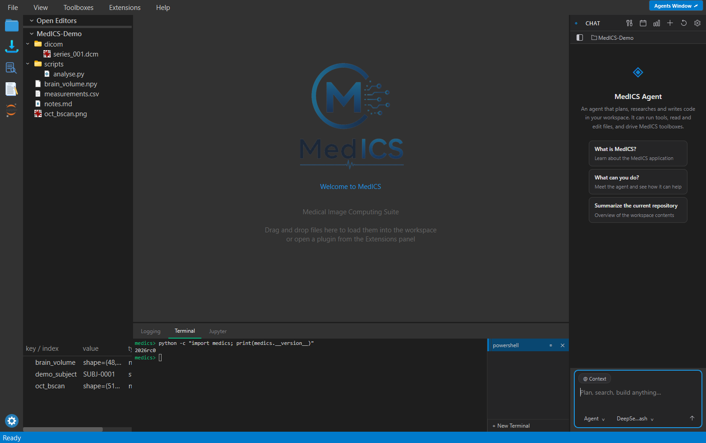

A free software platform for medical image analysis and visualization. MedICS combines a scientific Python workspace, built-in toolboxes, and a pip-installable extension system into one desktop application.
Everything happens in one window. Your tools open as tabs in the middle, and the panels around them give you the File Explorer, your workspace variables, the log, a terminal and the Python console. Extensions add their own tabs and menus.

| Area | What you get |
|---|---|
| Image I/O | DICOM, TIFF stacks, HDF5 / .med, MATLAB .mat, PNG/JPEG, and other scientific formats |
| Preview | Double-click files in Explorer to inspect text, markdown, tables, 2-D images, and volumes (slice, window/level, transforms) |
| Import | Drag-and-drop importer with background loading and progress |
| Python | In-process Jupyter kernel plus a full editor (syntax highlighting, completions, terminal) |
| Workspace | Named variables, inspector, load/save .med workspaces |
| Extensions | Discover installed extension packages or drop-in folders; load, show, and unload without restarting the app |
PyEditor, ImportData, and FilePreview open as central tabs and share the workspace.
Add UI and tools with pip packages — no core patch required.